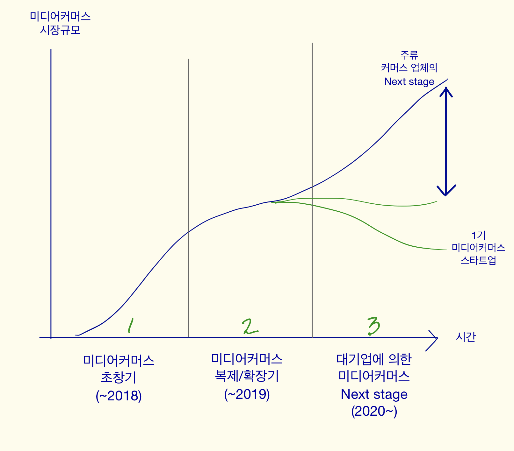

5. 잠재 사업가가 마주할 수 있는 변화들 2
미디어커머스 시장, 마지막 기회?
- 일반적으로 새로운 마케팅 채널(ex. FBIG)과 참신한 광고 소재(ex.동영상,BnA)는 기업이 폭발적 성장을 하게 한다.- 하지만 시간이 흐르면 이런 이점이 사라진다. 광고주는 많아지고, 광고 단가는 오르고, 광고 소재는 진부하게 느껴진다.
- 최근 대기업 or 대형 스타트업, 광고대행사들은 미디어커머스의 문법을 모두 익혔으며, next 미디어커머스 문법을 찾기 위해 앞장서 투자하고 있다.
- 이것이 시사하는 바는 미디어커머스가 더이상 틈새시장이 아니며, 대형 플레이어가 들어온 시장이라는 것이다.
- 마치 작은 업체들만 있던 시장에 대형 프렌차이즈가 들어온 것과 같다. 제빵 시장을 파리바게트가, 치킨 시장을 교촌이 점유하는 것과 같다.
- 어느 시장에서든 대형 기업은 자본과 기술력을 통해 동일한 행위를 낮아진 원가로 수행함으로써 시장을 지배하는 패턴을 보인다.
- 따라서 잠재 사업자에게는 시간이 별로 남지 않았다.

잠재 사업가가 원하는 길은?
- (1번) 투자받고 유니콘 스타트업을 만든다.: 투자자들을 납득시킬만한, 업계 새로운 문법을 만들어야 하고,
투자를 받는 순간 달리는 것을 멈출 수 없으며,
수많은 직원들을 관리하는 스트레스를 감내해야 한다.
- (2번) 개인 사업가로서 온라인 판매업을 영위한다.
: 대형 기업들이 당신이 수행하려는 상품기획, 마케팅, 유통을 더 낮은 원가로 가능하게 만들고,
아주 넓은 상품 카테고리에서 물건을 팔고자 할 것이다.
따라서 빠르게 세부 시장을 정해서 나름의 브랜드 자산을 만드는 시간을 확보하는 편이 좋다.